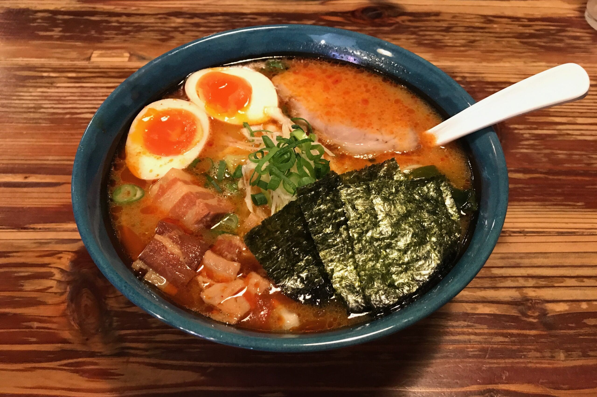
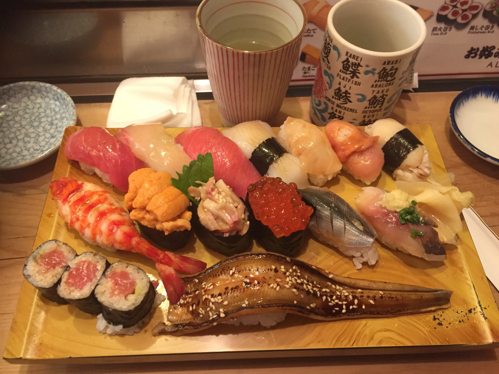
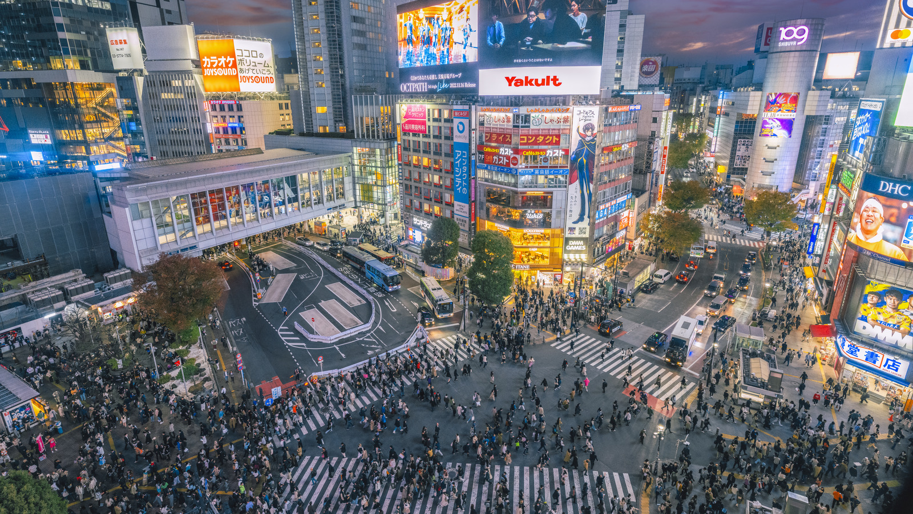

Traditional Foods

Tokyo Ramen
Rich tonkotsu broth with handmade noodles and tender chashu pork
Noodles

Tsukiji Sushi
Fresh sushi from the famous fish market, melt-in-your-mouth experience
Seafood

Tempura
Lightly battered and fried seafood and vegetables, crispy perfection
Fried
Cultural Tradition

Senso-ji Temple
Tokyo's oldest Buddhist temple with traditional architecture and ceremonies
Year-Round

Shibuya Crossing
World's busiest pedestrian crossing representing modern Japanese urban culture
Year-Round